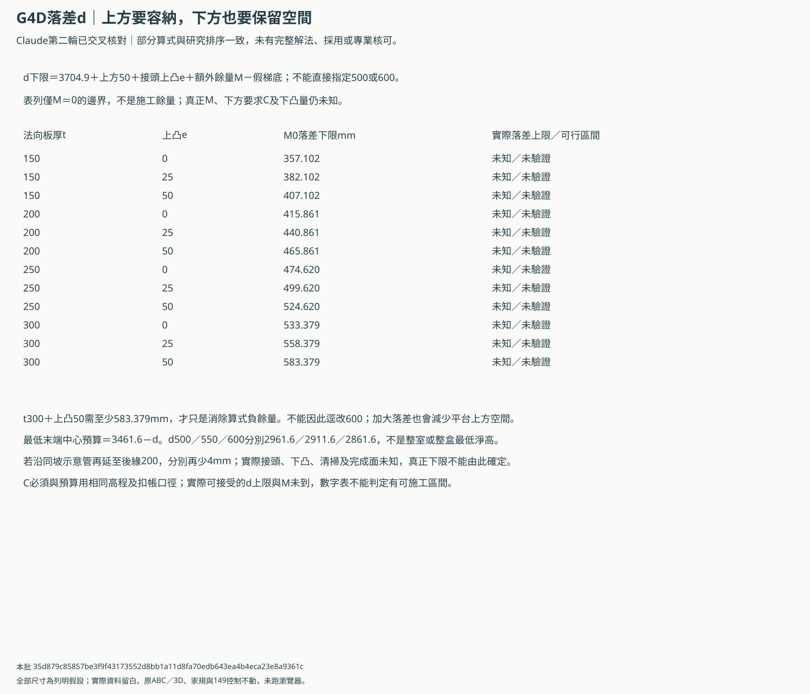
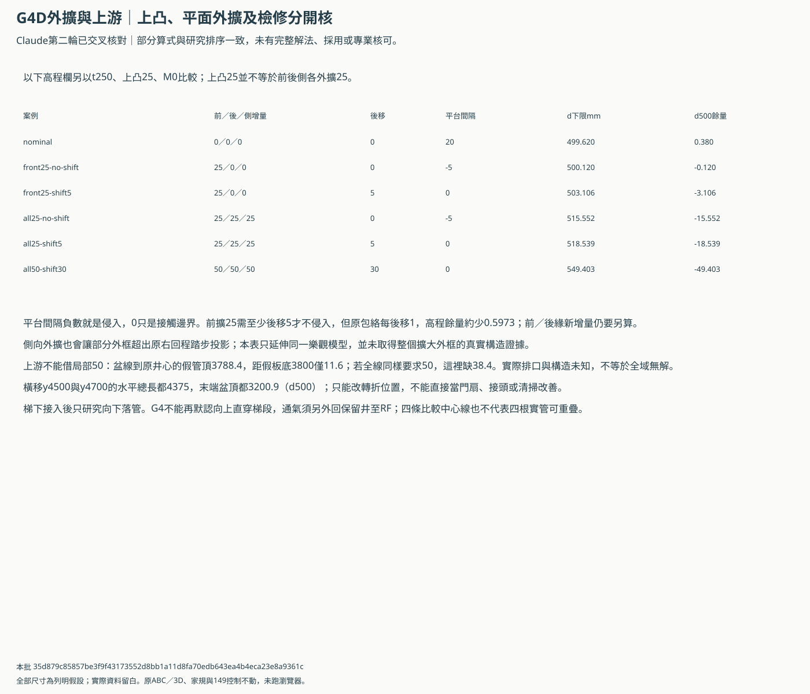
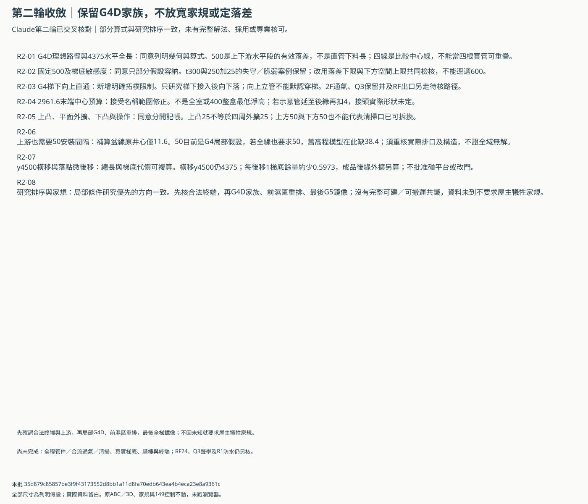

B落管第二輪交叉核對：G4D的落差範圍與完整包絡
第二輪回應已核來源。只有部分算式與研究排序一致，沒有完整設計共識、採用或專業核可；不固定500或改定600。
先確認合法終端與上游，再深化G4D局部家族；前濕區重排居次、全梯鏡像最後。尚無需屋主放寬家規或取消前後搬轎任一版。
落差的上下限，不只往下壓管


獨立外擴與上游間隔


同意、修正與待核範圍


假落差例，沒有選用
| d mm | 末端中心預算mm | 若直管到後緣mm | 真正整盒最低淨高 |
|---|---|---|---|
| 500 | 2961.6 | 2957.6 | 未知 |
| 550 | 2911.6 | 2907.6 | 未知 |
| 600 | 2861.6 | 2857.6 | 未知 |
交叉核對
| ID | 議題 | 核對 | 限制 |
|---|---|---|---|
| R2-01 | G4D理想路徑與4375水平全長 | 同意列明幾何與算式 | 500是上下游水平段的有效落差，不是直管下料長；四線是比較中心線，不能當四根實管可重疊。 |
| R2-02 | 固定500及梯底敏感度 | 同意只部分假設容納 | t300與250加25的失守／脆弱案例保留；改用落差下限與下方空間上限共同檢核，不能逕選600。 |
| R2-03 | G4梯下向上直通 | 新增明確拓樸限制 | 只研究梯下接入後向下落；向上立管不能默認穿梯。2F通氣、Q3保留井及RF出口另走待核路徑。 |
| R2-04 | 2961.6末端中心預算 | 接受名稱範圍修正 | 不是全室或400整盒最低淨高；若示意管延至後緣再扣4，接頭實際形狀未定。 |
| R2-05 | 上凸、平面外擴、下凸與操作 | 同意分開記帳 | 上凸25不等於四周外擴25；上方50與下方50也不能代表清掃口已可拆換。 |
| R2-06 | 上游也需要50安裝間隔 | 補算盆線原井心僅11.6 | 50目前是G4局部假設，若全線也要求50，舊高程模型在此缺38.4；須重核實際排口及構造，不證全域無解。 |
| R2-07 | y4500橫移與落點微後移 | 總長與梯底代價可複算 | 橫移y4500仍4375；每後移1梯底餘量約少0.5973，成品後緣外擴另算；不批准碰平台或改門。 |
| R2-08 | 研究排序與家規 | 局部條件研究優先的方向一致 | 先核合法終端，再G4D家族、前濕區重排、最後G5鏡像；沒有完整可建／可搬運共識，資料未到不要求屋主犧牲家規。 |
等資料後一起核
- 合法前接管位置／權利／高程、覆土與地梁；若只能後出，完整避保護帶的路線
- 同版真實梯板／梯梁及局部構造底面，不以鼻線模型替代
- 四線真實排口、合流、水力、有效落差總成與管徑
- 2F通氣回保留井至RF，不沿梯下立管向上穿梯
- 上凸／前後側外擴／下凸／安裝誤差及清掃抽換各自包絡
- 全程分區所需淨高及額外穩定餘量，不把局部50套成全線已滿足
- 兩種搬轎版、兩門全程及施工暫時障礙各自核算
- 原RF24、Q3聲學、R1防水與全棟機電另案不消失
drop-bounds.csv／drop-examples.csv／body-growth.csv／cross-positions.csv／claim-review.csv／upstream-gap.csv／engineering-replies.csv
本批 35d879c85857be3f9f43173552d8bb1a11d8fa70edb643ea4b4eca23e8a9361c；本次未發出新AI請求、未跑瀏覽器／WebGL。原ABC、家規與149控制保留。